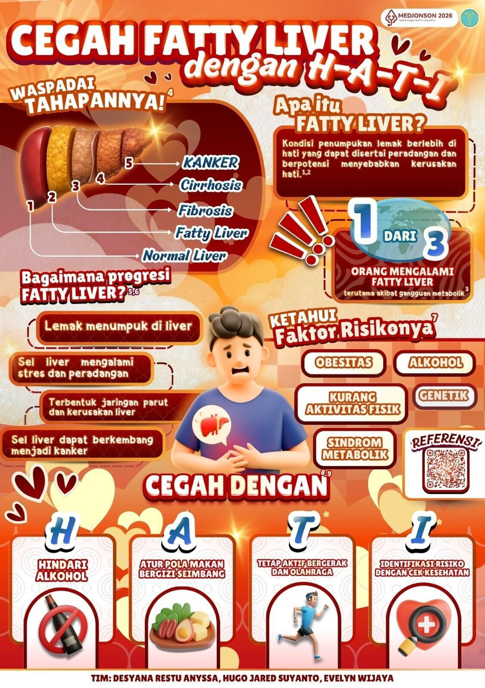
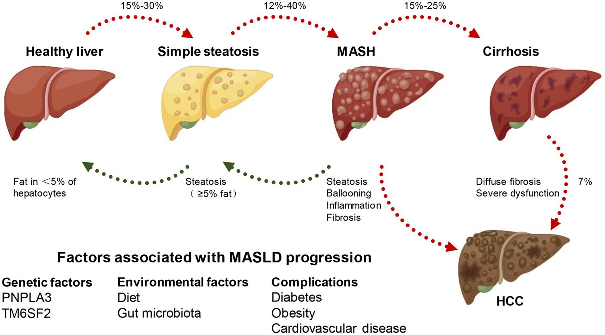
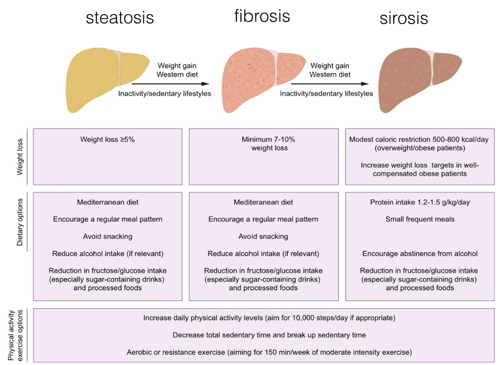

Fatty Liver(Steatotic Liver Disease)
Pelajari tentang penyakit perlemakan hati — definisi, genetik, patofisiologi, diagnosis, dan strategi penanganannya secara komprehensif.

Apa itu Fatty Liver?
Fatty liver (steatotic liver disease) adalah istilah umum yang menggambarkan kondisi adanya penumpukan lemak di dalam sel hati. Steatosis hepatik didefinisikan sebagai kandungan lemak intrahepatik setidaknya 5% dari berat hati.
Saat ini, fatty liver tidak lagi dianggap sebagai satu penyakit tunggal, tetapi merupakan spektrum besar dengan berbagai penyebab dan tingkat keparahan. Secara modern, fatty liver dibagi menjadi beberapa kategori utama:
ALD
Alcohol-Related Liver Disease — istilah modern pengganti "alcoholic liver disease". Mencakup spektrum kerusakan hati akibat konsumsi alkohol, mulai dari perlemakan sederhana hingga sirosis.
MASH
Metabolic Dysfunction-Associated Steatohepatitis — bentuk lebih berat dari MASLD, disertai peradangan hati dan kerusakan hepatosit. Risiko tinggi berkembang menjadi fibrosis, sirosis, hingga karsinoma hepatoselular.
Faktor Risiko Genetik
Polimorfisme gen tertentu dapat meningkatkan risiko seseorang mengalami fatty liver. Dua gen risk alleles yang telah diidentifikasi:
PNPLA3 (I148M)
Varian ini menyebabkan perubahan fungsi protein yang berperan dalam metabolisme lemak di hati dan jaringan adiposa.
- Meningkatkan penumpukan lemak di hepatosit
- Mengganggu pemecahan dan pengolahan lemak
- Mempercepat progresi menjadi peradangan hati (MASH)
TM6SF2 (E167K)
Varian ini memengaruhi proses sekresi lipid dari hati.
- Mengganggu pembentukan dan pelepasan VLDL dari hati
- Lemak tidak dapat dikeluarkan ke sirkulasi
- Terjadi akumulasi trigliserida di hepatosit
- Meningkatkan risiko inflamasi dan kerusakan hati (MASH)
Mekanisme Penyakit
Fatty liver terjadi akibat ketidakseimbangan antara proses masuk, pembentukan, oksidasi, dan pengeluaran lemak di hati.
- Peningkatan kadar asam lemak bebas (FFA) dari jaringan adiposa sebagai sumber utama akumulasi lemak di hati.
- Peningkatan de novo lipogenesis — proses pembentukan asam lemak baru di hati.
- Penurunan proses β-oksidasi mitokondria yang berfungsi membakar asam lemak sebagai energi.
- Gangguan sekresi lipoprotein VLDL menyebabkan trigliserida tertahan di dalam hepatosit.
Akumulasi lemak yang berlebihan memicu gangguan fungsi sel hati melalui disfungsi mitokondria, stres retikulum endoplasma (ER stress), dan peningkatan stres oksidatif.
Kombinasi proses tersebut menyebabkan cedera hepatosit dan memicu respons inflamasi. Sel Kupffer (makrofag hati) teraktivasi dan melepaskan mediator inflamasi, yang kemudian mengaktivasi sel stelata hepatik — berperan penting dalam pembentukan fibrosis sebagai tahap awal menuju sirosis.
Progresi Penyakit
Fatty liver merupakan spektrum penyakit yang dapat berkembang dari kondisi ringan hingga berat. Klik gambar untuk memperbesar.

Diagnosis Fatty Liver
Diagnosis dapat dilakukan melalui pendekatan noninvasif maupun invasif, tergantung indikasi klinis.
Noninvasif
Imaging:
- USG (Ultrasonografi)
- CT Scan
- MRI (Magnetic Resonance Imaging)
- CAP (Controlled Attenuation Parameter) via FibroScan
Serum Biomarker:
- FIB-4 score
- NAFLD Fibrosis Score
- AST to Platelet Ratio Index (APRI)
Invasif
Biopsi hati adalah gold standard untuk diagnosis pasti, menilai:
- Derajat steatosis
- Tingkat inflamasi
- Fibrosis
- Adanya steatohepatitis (MASH)
Indikasi biopsi:
- Kecurigaan fibrosis lanjut / sirosis
- Hasil non-invasif tidak jelas atau tidak konsisten
- Konfirmasi diagnosis ketika penyebab lain belum dapat disingkirkan
Strategi Penanganan
Penanganan bertujuan mencegah progresivitas penyakit hati dan memperbaiki kondisi metabolik yang mendasari (adiposopathy).
Modifikasi Gaya Hidup Lini Pertama
- Diet hipokalori (defisit 500–1000 kkal/hari)
- Diet Mediterania — sayur, buah, kacang, ikan, minyak zaitun; batasi gula & karbohidrat olahan
- Intermittent fasting (pembatasan eating window)
Terapi Farmakologi
Dipertimbangkan pada pasien dengan risiko progresi fibrosis, MASH, atau komorbid metabolik tidak terkontrol. Obat disesuaikan kondisi metabolik (diabetes, dislipidemia, obesitas).
Bariatrik
Untuk pasien obesitas berat yang tidak respons terhadap perubahan gaya hidup dan terapi obat. Mencakup prosedur pembedahan dan endoskopi.
Aktivitas Fisik
Latihan aerobik dan anaerobik intensitas sedang (jalan cepat, bersepeda, jogging, latihan kekuatan). Dianjurkan ±45 menit/sesi, 3×/minggu.

Sumber
Konten ini disusun berdasarkan literatur ilmiah yang telah dipublikasikan.
- 1Pathogenesis and Prevention of Hepatic Steatosis - https://pubmed.ncbi.nlm.nih.gov/27099587/
- 2Pathophysiology, Noninvasive Diagnostics and Emerging Personalized Treatments for Metabolic Associated Liver Diseases - https://www.nature.com/articles/s44355-025-00030-2
- 3PNPLA3 Gene - https://medlineplus.gov/genetics/gene/pnpla3/
- 4Current Status of Genetics and Polygenic Risk Scores in Metabolic Dysfunction-Associated Steatohepatitis - https://pmc.ncbi.nlm.nih.gov/articles/PMC11348538/
- 5Implications of the New Nomenclature of Steatotic Liver Disease and Definition of Metabolic Dysfunction-Associated Steatotic Liver Disease - https://pubmed.ncbi.nlm.nih.gov/38153279/
- 6Unmasking the Enigma of Lipid Metabolism in Metabolic Dysfunction-Associated Steatotic Liver Disease: From Mechanism to the Clinic - https://www.frontiersin.org/journals/medicine/articles/10.3389/fmed.2023.1294267/full
- 7Nutrients, Volume 12, Issue 11 - https://www.mdpi.com/2072-6643/12/11
- 8Lifestyle Modification in NAFLD/NASH: Facts and Figures - https://pubmed.ncbi.nlm.nih.gov/32039399/